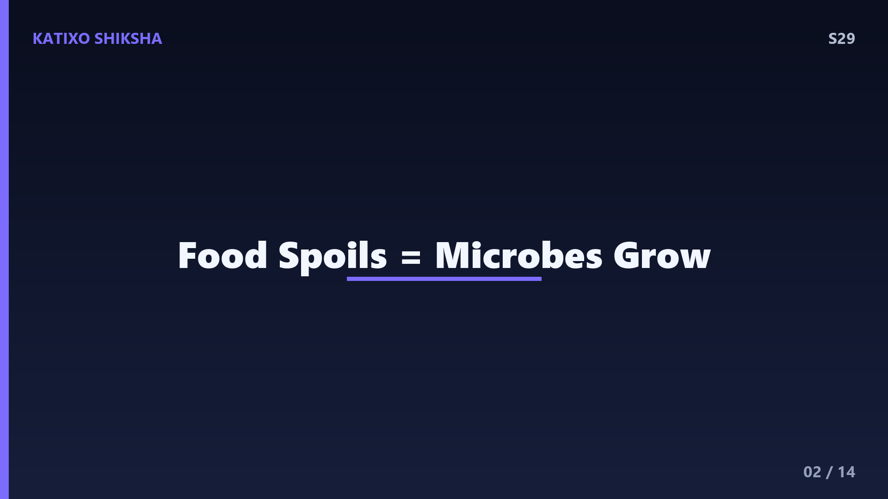
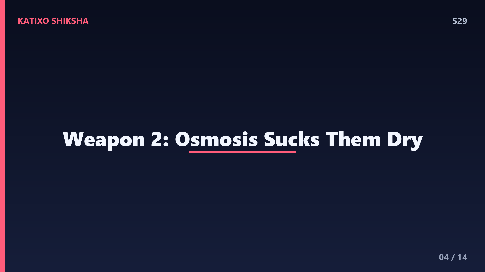
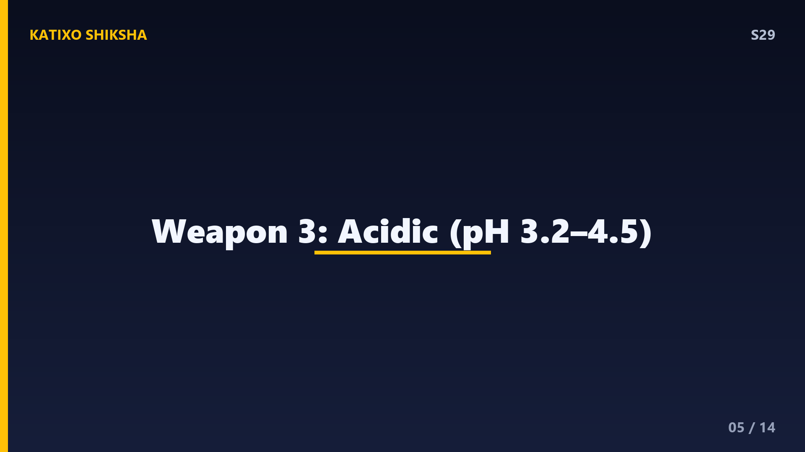
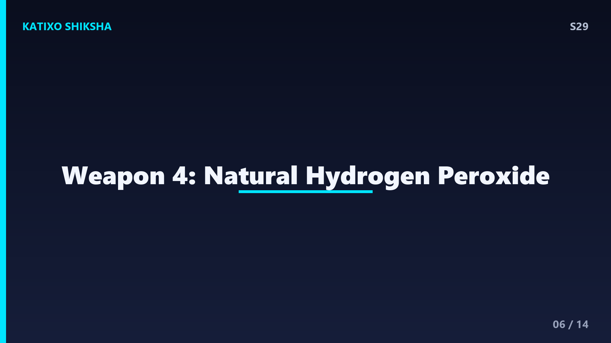
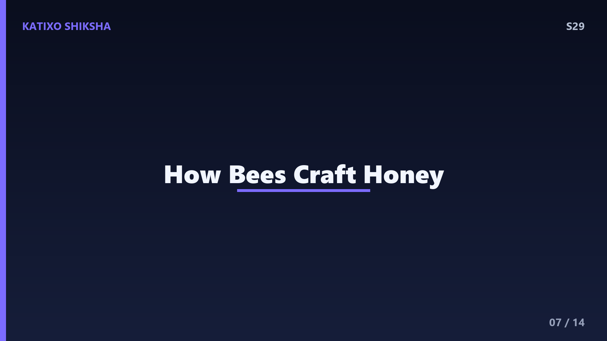
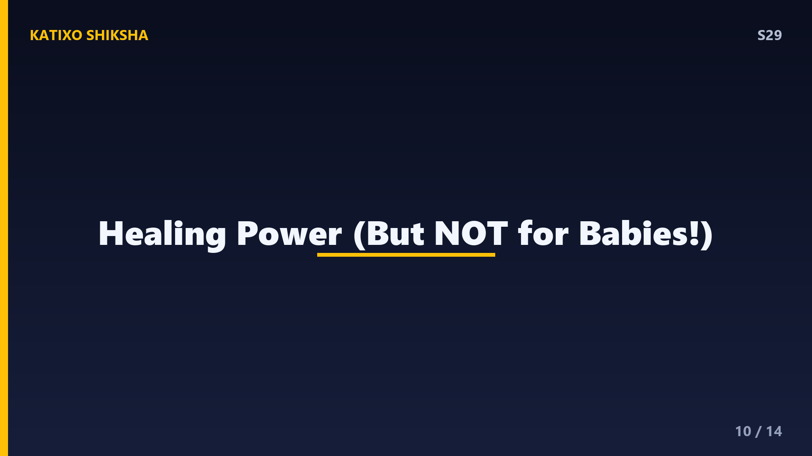
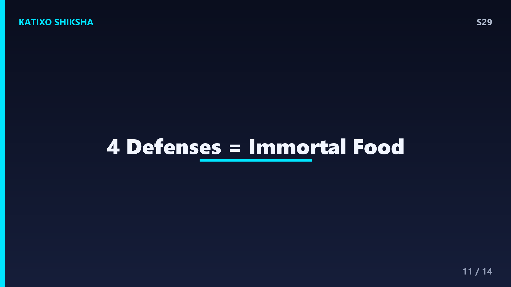

S29 — शहद यानी Honey कभी खराब क्यों नहीं होता?
Slide 1दोस्तों, एक मज़ेदार fact से शुरू करते हैं। Egypt के पुराने पिरामिडों में पुरातत्वविदों यानी archaeologists को 3000 साल पुराना शहद मिला, और सबसे चौंकाने वाली बात, वो आज भी खाने लायक था! जबकि दूध दो दिन में फट जाता है, रोटी हफ्ते भर में फफूंद पकड़ लेती है, पर honey हज़ारों साल बाद भी खराब नहीं होता। आखिर ऐसा कौन सा जादू है इस सुनहरी मिठास में? यह कोई जादू नहीं, बल्कि कमाल की chemistry और biology है। आज Katixo Shiksha पर हम honey के इस अमर रहस्य को खोलेंगे। चलो दोस्तों, मधुमक्खी की दुनिया में!

Slide 2सबसे पहले समझो कि खाना खराब क्यों होता है। दोस्तों, खाना सड़ता है क्योंकि उस पर bacteria और fungi यानी सूक्ष्म जीव पनपते हैं। यह सूक्ष्म जीव खाने को खाकर बढ़ते हैं और उसे toxic बना देते हैं। पर इन जीवों को जीने के लिए तीन चीज़ें चाहिए, पानी, सही temperature, और भोजन। अगर इनमें से कोई एक भी चीज़ छीन लो, तो यह जीव ना तो बढ़ पाते हैं और ना ही खाना खराब कर पाते हैं। और दोस्तों, honey बहुत ही चालाकी से इन जीवों को जीने का एक भी मौका नहीं देता। कैसे? आगे समझते हैं!
Slide 3Honey का पहला हथियार है, बहुत कम पानी। दोस्तों, honey में पानी की मात्रा सिर्फ 17 से 18 percent होती है, जो बहुत ही कम है। इसके मुकाबले उसमें sugar यानी शक्कर लगभग 80 percent है! इतनी ज़्यादा शक्कर और इतना कम पानी, honey को बहुत गाढ़ा और concentrated बना देता है। Bacteria को जीने के लिए पानी चाहिए, पर honey में इतना कम पानी है कि उन बेचारों को कुछ मिलता ही नहीं। यानी honey एक ऐसा रेगिस्तान है जहाँ सूक्ष्म जीव प्यासे ही मर जाते हैं। यह है honey की पहली ताकत!

Slide 4दूसरा हथियार है osmosis, जो बहुत ही clever है। दोस्तों, osmosis एक ऐसा process है जिसमें पानी कम शक्कर वाली जगह से ज़्यादा शक्कर वाली जगह की तरफ खिंचता है। अब सोचो, honey में शक्कर बहुत ज़्यादा है। तो अगर कोई bacteria honey में गिर भी जाए, तो honey उस bacteria के शरीर का पानी osmosis से बाहर खींच लेता है! पानी निकलते ही bacteria सिकुड़ जाता है और मर जाता है। इसे scientists hygroscopic property कहते हैं, यानी honey आसपास से पानी सोख लेता है। यानी honey सूक्ष्म जीवों को सूखाकर मार देता है। कितना दमदार defence है ना!

Slide 5तीसरा हथियार है acidity, यानी खट्टापन। दोस्तों, honey हल्का सा acidic होता है। इसका pH लगभग 3.2 से 4.5 के बीच होता है, जो काफी कम यानी अम्लीय है। याद रखो, pH 7 neutral होता है, और 7 से कम acidic। ज़्यादातर bacteria neutral pH में, यानी 6 से 7 के आसपास ही ठीक से पनपते हैं। honey का खट्टा माहौल उनके लिए जीना नामुमकिन बना देता है। यह खट्टापन आता है honey में मौजूद gluconic acid से। तो low water, osmosis, और अब acidity, honey के पास तो पूरी army है सूक्ष्म जीवों से लड़ने की!

Slide 6अब आता है सबसे genius हथियार, hydrogen peroxide! दोस्तों, यह वही चीज़ है जो डॉक्टर घाव साफ करने के लिए इस्तेमाल करते हैं, एक natural antiseptic। पर honey में यह आता कहाँ से है? जब मधुमक्खी फूलों का रस यानी nectar इकट्ठा करती है, तो वो उसमें एक खास enzyme मिलाती है जिसे glucose oxidase कहते हैं। यह enzyme honey में हल्का-हल्का hydrogen peroxide बनाता रहता है। यह bacteria को मारने में मदद करता है। तो honey सिर्फ सूक्ष्म जीवों को भूखा-प्यासा ही नहीं मारता, बल्कि एक natural दवा भी छोड़ता रहता है। है ना मधुमक्खी की कमाल की chemistry!

Slide 7अब समझो मधुमक्खी यह सुनहरा कमाल बनाती कैसे है। दोस्तों, मधुमक्खी फूलों से मीठा nectar चूसती है, जिसमें बहुत पानी होता है। वो इसे अपने खास honey stomach में भरती है, जहाँ enzymes मिलते हैं और शक्कर टूटकर simple sugars यानी glucose और fructose बनती है। फिर वो इसे छत्ते में डाल देती है। अब मधुमक्खियाँ अपने पंखों से तेज़ हवा देकर nectar का ज़्यादातर पानी उड़ा देती हैं, जिससे वो गाढ़ा honey बन जाता है। आखिर में वो छत्ते के खानों को मोम यानी wax से बंद कर देती हैं। यह पूरी मेहनत honey को सालों तक सुरक्षित रखती है!
Slide 8एक ज़रूरी सावधानी, honey खराब नहीं होता, पर शर्त है कि उसे सही तरीके से रखा जाए! दोस्तों, सबसे बड़ा दुश्मन है पानी और नमी। अगर honey में पानी चला जाए, या उसका ढक्कन खुला रहे जिससे वो हवा से नमी सोख ले, तो उसका कम-पानी वाला जादू कमज़ोर हो जाता है। तब उसमें yeast पनप सकता है और वो fermentation यानी खमीर पकड़ सकता है। इसलिए honey को हमेशा सूखे, साफ चम्मच से निकालो, ढक्कन कसकर बंद रखो, और सूखी जगह पर रखो। बस इतनी सी देखभाल, और honey सालों साथ देगा!
Slide 9एक मज़ेदार बात, कई बार honey जम जाता है या दानेदार हो जाता है, जिसे crystallization कहते हैं। बहुत लोग सोचते हैं honey खराब हो गया, पर दोस्तों यह बिल्कुल गलत है! Crystallization तो असली, शुद्ध honey की निशानी है। ऐसा इसलिए होता है क्योंकि honey में glucose की मात्रा ज़्यादा होती है, जो समय के साथ ठोस crystals बना लेती है। यह खराब होने का नहीं, बल्कि natural process है। और इसे ठीक करना बहुत आसान है, बस honey के जार को थोड़ी देर गुनगुने पानी में रख दो, और वो फिर से बहने लगेगा। तो crystallized honey घबराकर फेंकना मत!

Slide 10Honey के कुछ कमाल के फायदे भी जानो। दोस्तों, अपने antibacterial गुणों की वजह से honey हज़ारों सालों से घाव और जलन पर लगाया जाता रहा है। आज भी अस्पतालों में एक खास medical-grade honey, जैसे Manuka honey, घाव भरने के लिए इस्तेमाल होता है! honey खांसी में भी आराम देता है, और research बताती है कि यह कई बार सिरप जितना असरदार होता है। पर एक बहुत ज़रूरी चेतावनी, एक साल से छोटे बच्चों को honey कभी मत दो, क्योंकि उसमें कुछ ऐसे bacteria spores हो सकते हैं जो शिशुओं के लिए खतरनाक हैं। बड़ों के लिए यह सेहत का खज़ाना है!

Slide 11अब सब हथियारों को एक साथ देखो, यही है honey की असली ताकत। दोस्तों, अकेले कोई एक चीज़ नहीं, बल्कि चार अलग-अलग बचाव मिलकर honey को अमर बनाते हैं। पहला, बहुत कम पानी जिससे bacteria को प्यास से मौत। दूसरा, osmosis जो उनके शरीर का पानी खींच लेता है। तीसरा, acidic खट्टापन जो उनका माहौल बिगाड़ देता है। और चौथा, hydrogen peroxide जो एक natural दवा है। इन चारों के मिले-जुले हमले से कोई भी सूक्ष्म जीव honey में पनप ही नहीं सकता। इसीलिए honey प्रकृति का एकमात्र ऐसा खाना है जो कभी खराब नहीं होता। है ना अद्भुत!
Slide 12Quick brain check, दोस्तों! तीन सवाल, ध्यान से सोचो। पहला, honey में पानी की मात्रा कितनी कम होती है, और शक्कर कितनी ज़्यादा? दूसरा, वो कौन सा process है जिससे honey bacteria के शरीर का पानी बाहर खींचकर उसे सुखा देता है? तीसरा, मधुमक्खी का वो कौन सा enzyme है जो honey में natural antiseptic hydrogen peroxide बनाता है? अब video को pause करो और तीनों के जवाब खुद सोचो। बिना scroll किए! तैयार हो? चलो जवाब मिलाते हैं!
Slide 13जवाब का समय! पहला, honey में पानी सिर्फ लगभग 17 से 18 percent होता है, और शक्कर लगभग 80 percent, यानी बहुत कम पानी और बहुत ज़्यादा शक्कर। दूसरा, वो process है osmosis, जिसमें honey की ज़्यादा शक्कर bacteria के शरीर का पानी बाहर खींच लेती है और उसे सुखाकर मार देती है। तीसरा, वो enzyme है glucose oxidase, जो मधुमक्खी मिलाती है और जो honey में natural hydrogen peroxide बनाता है। सब सही? शाबाश दोस्तों!
Slide 14तो दोस्तों, आज हमने सीखा कि honey कभी खराब नहीं होता क्योंकि उसके पास चार दमदार हथियार हैं, बहुत कम पानी, osmosis, खट्टापन यानी acidity, और natural hydrogen peroxide। यही वजह है कि 3000 साल पुराना शहद भी खाने लायक रहता है! बस उसे नमी से बचाकर रखना, और crystallize होने पर घबराना मत। प्रकृति का यह सुनहरा चमत्कार chemistry और मधुमक्खी की मेहनत का नतीजा है। अगले episode में हम जानेंगे, passwords और encryption हमारे राज़ कैसे सुरक्षित रखते हैं? Subscribe करना मत भूलना! Bye!